Ce chapitre détaille la création d’un état à partir de modèles, au moyen de la fenêtre de création/modification. Pour toute autre action sur les états, consultez le chapitre 20, États.
La création d’un état se compose de quatre étapes :
À la fin, quand vous en avez terminé avec toutes les sélections, l’organisation et l’affichage des données, et que vous avez bien donné un nom à votre état, vous pouvez valider ce nouvel état par le bouton Valider dans la fenêtre de création/modification. Votre nouvel état apparaîtra alors dans la liste des états, dans le panneau de navigation.
Vous disposez de trois possibilités :
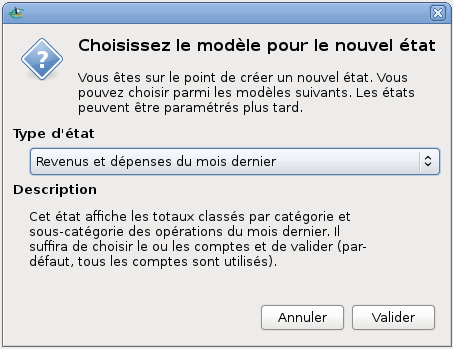
Figure 21.1: Choix du modèle de l’état de départ
La fenêtre de création/modification des états s’affiche, et vous pouvez en changer la taille et la position. Cette fenêtre comprend deux panneaux verticaux :
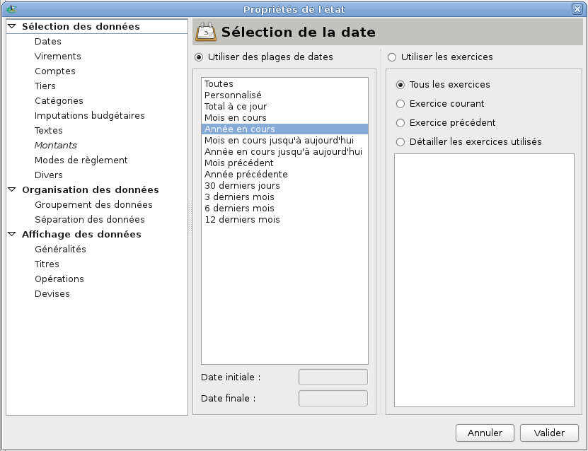
Figure 21.2: Fenêtre de création/modification des états
Note : ces triangles peuvent être remplacés, en fonction du thème de l’environnement de bureau ou du gestionnaire de fenêtres que vous utilisez, par d’autres caractères tels que +, -, >, <, etc.
Vous pouvez sélectionner un autre onglet en cliquant sur son nom, ou en naviguant dans le panneau des onglets avec les touches du clavier <Tabulation>, <Flèche Haut>, <Flèche Bas>, <Flèche Gauche>, <Flèche Droit>, <Page Haut>, <Page Bas>.
Vous pouvez sélectionner vos données selon les critères suivants :
La fenêtre de création/modification possède donc autant d’onglets que la liste ci-dessus possède d’items. Par défaut, Grisbi considère que vous désirez utiliser toutes les opérations de votre fichier de comptes. Vous ne devez donc garder que les opérations qui vous intéressent, en excluant les autres ; la sélection finale sera obtenue après application de toutes les sélections ci-dessus. Il est donc conseillé de vérifer tous les critères de sélection de la fenêtre de création/modification avant de valider votre état, bien que vous puissiez reprendre la sélection par la suite.
Les sous-sections suivantes décrivent en détail toutes ces possibilités de sélection de données.
Vous pouvez sélectionner soit des plages de dates, soit des exercices si vous en avez défini.
Le choix par défaut est Utiliser des plages de dates. S’il a été changé, vous pouvez le resélectionner en cochant le bouton Utiliser des plages de dates.
Vous pouvez faire les sélections suivantes :
Pour continuer vos sélections, passez à l’onglet suivant.
Pour sélectionner vos opérations par exercice, cochez le bouton correspondant Utiliser les exercices (voir aussi le chapitre 15, Exercices). Vous pouvez faire les sélections suivantes :
Pour continuer vos sélections, passez à l’onglet suivant.
Vous choisissez ici la façon dont votre état traitera les opérations de virement. En cochant le bouton adéquat, vous pouvez faire les sélections suivantes :
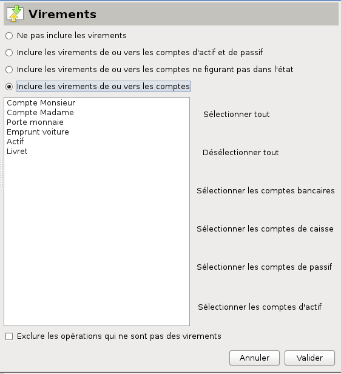
Figure 21.3: Sélection de virement
Pour continuer vos sélections, passez à l’onglet suivant.
Pour sélectionner vos opérations en fonction des comptes où elles ont été enregistrées, cochez la case Sélectionner les opérations uniquement sur certains comptes, qui par défaut ne l’est pas.
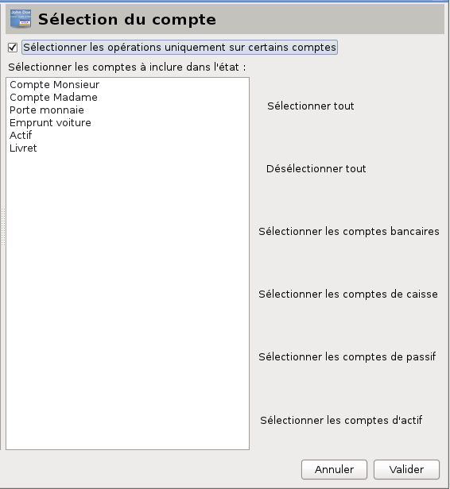
Figure 21.4: Sélection de compte
Ceci active la liste des comptes de votre fichier juste en-dessous, ainsi que les libellés de sélection par type de compte dans la partie droite du panneau ; sélectionnez les comptes désirés, en cliquant sur leur nom dans la liste (la sélection multiple avec <Ctrl><Clic> ou <Majuscule><Clic> est possible), ou en cliquant sur les libellés, qui vous permettent de choisir :
Pour continuer vos sélections, passez à l’onglet suivant.
Pour sélectionner vos opérations en fonction des tiers avec lesquels elles ont été enregistrées, cochez la case Détailler les tiers, qui par défaut ne l’est pas.
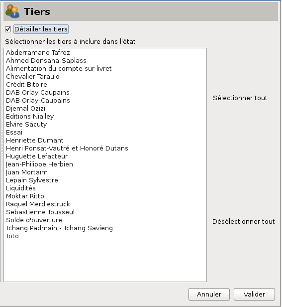
Figure 21.5: Sélection de tiers
Ceci active la liste des tiers de votre fichier juste en-dessous, ainsi que les libellés de sélection dans la partie droite du panneau ; sélectionnez les tiers désirés, en cliquant sur leur nom (la sélection multiple avec <Ctrl><Clic> ou <Majuscule><Clic> est possible), ou en cliquant sur les libellés, qui vous permettent de choisir :
Pour continuer vos sélections, passez à l’onglet suivant.
Pour sélectionner vos opérations en fonction des catégories avec lesquelles elles ont été enregistrées, cochez la case Détailler les catégories utilisées, qui par défaut ne l’est pas.
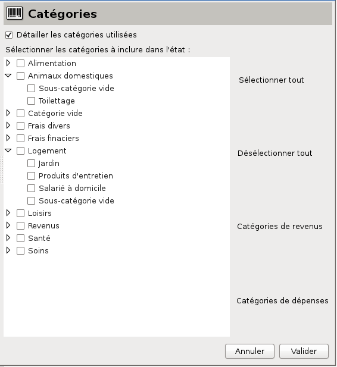
Figure 21.6: Sélection de catégorie
Ceci active la liste des catégories de votre fichier juste en-dessous, ainsi que les libellés de sélection dans la partie droite du panneau ; vous pouvez (dés)afficher les sous-catégories en cliquant sur le petit triangle à gauche du nom de la catégorie.
Note : ces triangles peuvent être remplacés, en fonction du thème de l’environnement de bureau ou du gestionnaire de fenêtres que vous utilisez, par d’autres caractères tels que +, -, >, <, etc.
Sélectionnez les (sous-) catégories, individuellement en cliquant sur leur case à gauche, ou en cliquant sur les libellés, qui vous permettent de choisir :
Pour continuer vos sélections, passez à l’onglet suivant.
Cela fonctionne exactement comme pour le critère Catégories.
Pour sélectionner vos opérations en fonction des imputations budgétaires avec lesquelles elles ont été enregistrées, cochez la case Détailler les imputations budgétaires utilisées, qui par défaut ne l’est pas.
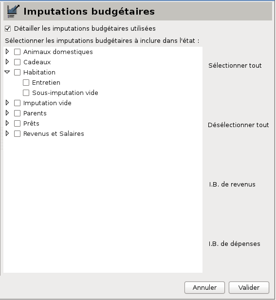
Figure 21.7: Sélection d’imputation budgétaire
Ceci active la liste des imputations budgétaires juste en-dessous, ainsi que les libellés de sélection dans la partie droite du panneau ; vous pouvez (dés)afficher les sous-imputations budgétaires en cliquant sur le petit triangle à gauche du nom de l’imputation.
Note : ces triangles peuvent être remplacés, en fonction du thème de l’environnement de bureau ou du gestionnaire de fenêtres que vous utilisez, par d’autres caractères tels que +, -, >, <, etc.
Sélectionnez les (sous-) imputations budgétaires, individuellement en cliquant sur leur case à gauche, ou en cliquant sur les libellés, qui vous permettent de choisir :
Pour continuer vos sélections, passez à l’onglet suivant.
Note : il se peut que la fenêtre de création/modification des états n’affiche pas entièrement le panneau droit de sélection de texte : il vous faudra alors agrandir manuellement sa taille.
Vous pouvez faire des sélections complexes basées sur le contenu (texte ou nombre) enregistré dans les champs d’une opération. Il s’agit de comparer le contenu du champ sélectionné à une valeur à travers un opérateur, et ceci pour toutes les opérations de votre fichier de comptes, tout au moins celles qui ont déjà été sélectionnées par les autres sélections de votre état en cours de création.
Créer une sélection d’après les Textes consiste donc à définir une phrase simple du type sujet-verbe-complément, et plus précisément ici, une instruction «champ-opérateur-valeur ». Les opérateurs sont soit alphanumériques s’il vous faut comparer des textes, soit numériques pour comparer des nombres.
Pour sélectionner vos opérations en fonction de certains contenus enregistrés dans leurs champs, cochez la case Sélectionner les opérations d’après leur contenu, qui par défaut ne l’est pas. Ceci active les champs de définition de la phrase, qui s’affiche par défaut sur trois lignes juste en-dessous.
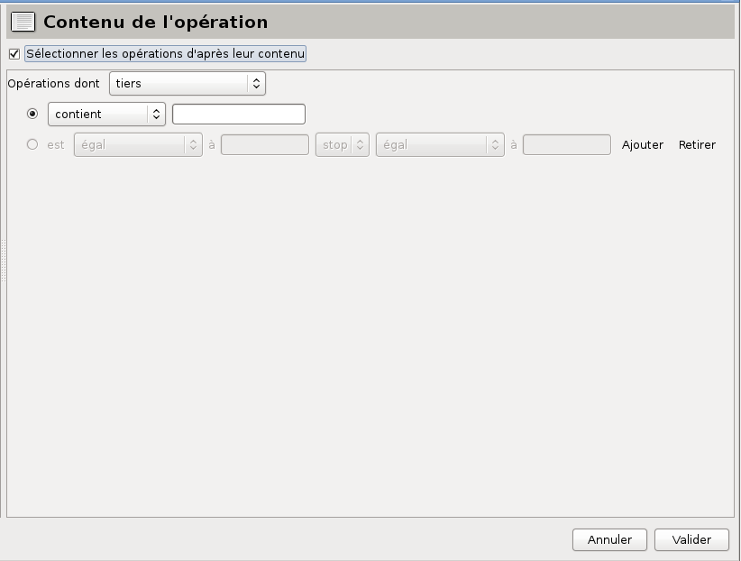
Figure 21.8: Sélection de texte
La 1re ligne sert à définir le champ. Les champs disponibles sont :
La 2e ligne sert à définir l’opérateur à appliquer et la valeur si le contenu du champ est un texte.
Les opérateurs alphanumériques disponibles sont :
La 3e ligne sert à définir l’opérateur à appliquer et la valeur si le contenu du champ est un nombre.
Les opérateurs numériques disponibles sont :
De plus, la 3e ligne permet de faire une double comparaison de façon à pouvoir, par exemple, sélectionner les contenus supérieurs à une valeur donnée, sauf les contenus égaux à une autre valeur. Pour cela, un opérateur concatène deux instructions «champ-opérateur-valeur ».
Les opérateurs de concaténation sont :
Ces trois lignes permettent de définir une instruction de deux manières différentes :
Tous les contenus des champs contenant du texte sont considérés comme du texte, à l’exception des champs n°chèque, pièce comptable et n°de rapprochement, qui peuvent être considérés soit comme du texte, soit comme des nombres, car ils sont enregistrés comme tels dans votre fichier de comptes. En effet, d’une part leur signification n’est pas purement numérique (vous ne chercherez jamais à les additionner ou les multiplier, n’est-ce pas ?), d’autre part, il n’est pas impossible qu’ils puissent contenir des lettres. Par exemple, le champ tiers (un nom est un texte) autorisera donc seulement le premier type d’instruction, tandis que le champ n°chèque, pièce comptable ou rapprochement bancaire autoriseront le premier et le deuxième type d’instruction, que vous choisirez selon votre besoin ; dans les deux cas, la ligne d’instruction non utilisée restera en grisé.
En pratique, pour créer une instruction, procédez comme suit :
Si vous voulez affiner votre sélection, vous pouvez encore créer une ou plusieurs autres instructions, qui seront liées aux précédentes par des opérateurs de concaténation : ceux-ci sont les mêmes que ci-dessus, excepté le stop qui n’a pas de raison d’être ici, puisqu’il s’agit de continuer.
Pour ajouter une instruction supplémentaire, procédez comme suit :
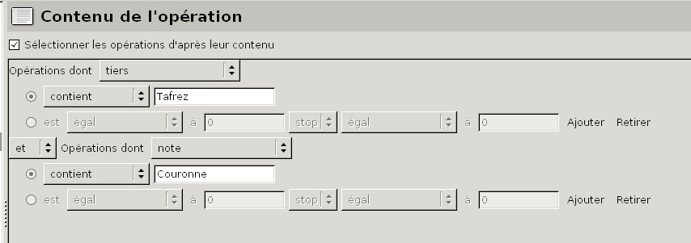
Figure 21.9: Sélection multiple de texte
Pour supprimer une instruction, cliquez sur le libellé Retirer à la fin de sa 3e ligne.
Pour continuer vos sélections, passez à l’onglet suivant.
La sélection d’après les Montants fonctionne de manière semblable à celle des Textes, mais elle est plus simple car il ne s’agit ici que de nombres, sans texte.
Note : il se peut que la fenêtre de création/modification des états n’affiche pas entièrement le panneau droit de sélection de texte : il vous faudra alors agrandir manuellement sa taille.
Vous pouvez faire des sélections complexes basées sur le nombre enregistré dans les champs d’une opération. Il s’agit de comparer le contenu du champ sélectionné à une valeur à travers un opérateur, et ceci pour toutes les opérations de votre fichier de comptes, tout au moins celles qui ont déjà été sélectionnées par les autres sélections de votre état en cours de création.
Créer une sélection consiste donc à définir une phrase simple du type sujet-verbe-complément, et plus précisément ici, une instruction «champ-opérateur-valeur ». Les opérateurs sont uniquement numériques, pour comparer des nombres.
Pour sélectionner vos opérations en fonction de certains contenus enregistrés dans leurs champs, cochez la case Sélectionner les opérations d’après les montants, qui par défaut ne l’est pas. Ceci active les champs de définition de la phrase, qui s’affiche par défaut sur une seule ligne juste en-dessous.
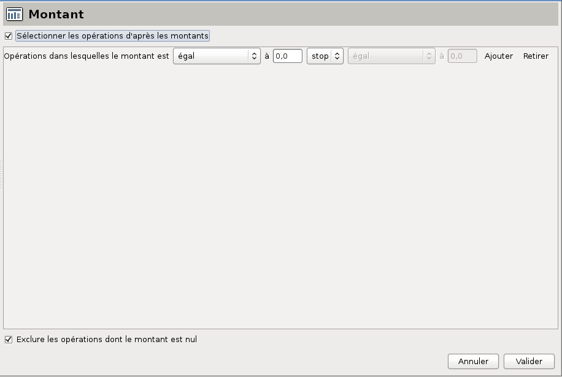
Figure 21.10: Sélection de montant
Cette ligne sert à définir l’opérateur à appliquer et le nombre à comparer. Les opérateurs numériques disponibles sont :
De plus, elle permet de faire une double comparaison, de façon à pouvoir, par exemple, sélectionner les contenus supérieurs à une valeur donnée, sauf les contenus égaux à une autre valeur. Pour cela, un deuxième opérateur concatène deux instructions «champ-opérateur-valeur ».
Les opérateurs de concaténation sont :
Cette ligne permet de définir l’instruction de la manière suivante : elle sera du type «champ-opérateur numérique-texte » «opérateur de concaténation » «opérateur numérique-texte ».
Note : les dépenses sont des montants négatifs ; ces montants doivent donc être précédés du signe «- » (moins) dans les champs où vous saisissez des montants négatifs, par exemple -72,15.
Note : Grisbi ne fera pas de contrôle de cohérence sur vos critères. Par exemple, si vous voulez sélectionner les opérations «dont le numéro de relevé est supérieur ou égal à 20 sauf celles dont le numéro de relevé est supérieur ou égal à 5 », vous obtiendrez un état vide, tout simplement. L’erreur peut être difficile à déceler, et on n’est jamais trop fort pour ce calcul !
En pratique, pour créer une instruction, procédez comme suit :
Si vous voulez affiner votre sélection, vous pouvez ajouter une ou plusieurs autres instructions, qui seront liées aux précédentes par des opérateurs de concaténation : ceux-ci sont les mêmes que ci-dessus, excepté le stop qui n’a pas de raison d’être ici, puisqu’il s’agit de continuer. Pour créer une instruction supplémentaire, procédez comme suit :

Figure 21.11: Sélection multiple de montant
Pour supprimer une instruction, cliquez sur le libellé Retirer à la fin de sa ligne.
Pour continuer vos sélections, passez à l’onglet suivant.
Pour sélectionner vos opérations en fonction du mode de règlement, cochez la case Sélectionner les opérations en fonction des modes de règlement, qui par défaut ne l’est pas.
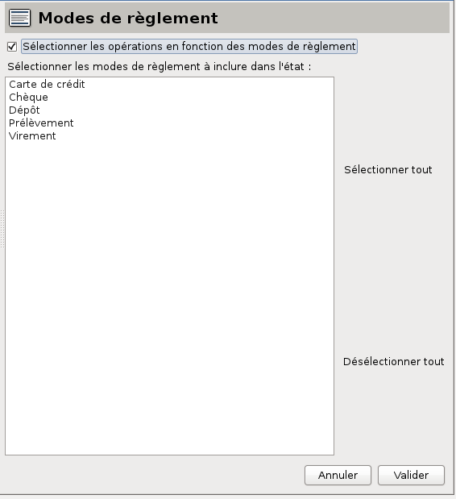
Figure 21.12: Sélection des mode de règlement
Ceci active la liste des modes de règlement de votre fichier juste en-dessous, ainsi que les libellés de sélection dans la partie droite du panneau ; sélectionnez les modes de règlement désirés, en cliquant sur leur nom (la sélection multiple avec <Ctrl><Clic> ou <Majuscule><Clic> est possible), ou en cliquant sur les libellés, qui vous permettent de choisir :
Pour continuer vos sélections, passez à l’onglet suivant.
Vous pouvez affiner votre sélection en ajoutant des critères sur les opérations rapprochées et ventilées.
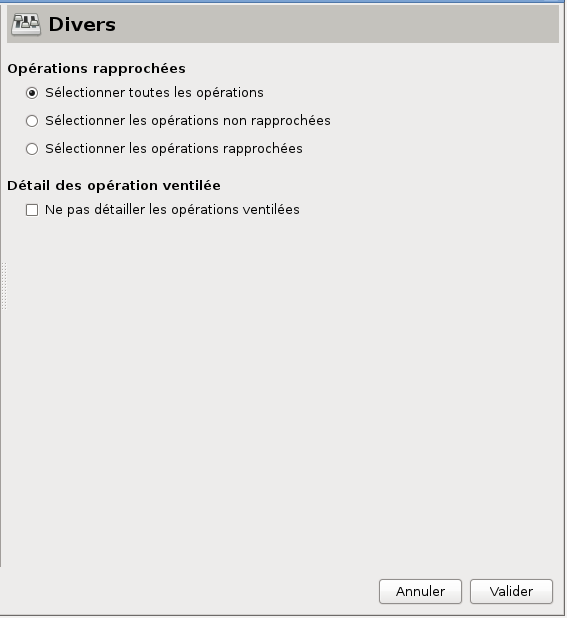
Figure 21.13: Sélections diverses
En cochant le bouton adéquat, vous pouvez sélectionner :
En cochant le bouton, vous pouvez choisir de ne pas détailler les opérations ventilées. Par défaut la case n’est pas cochée.
Vos sélections sont terminées. Pour organiser vos données, passez à l’onglet suivant.
Organiser les données de votre état signifie les grouper ou les séparer suivant vos besoins.
Cet onglet permet de grouper vos données selon différents critères et différents niveaux.
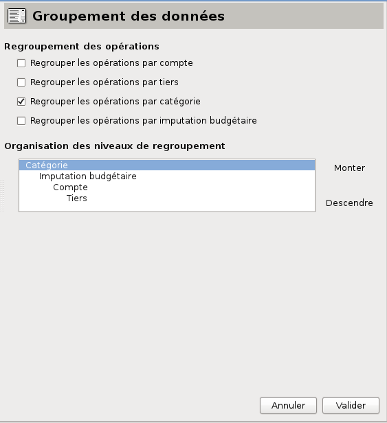
Figure 21.14: Organisation des niveaux de regroupement
Sous ce libellé, définissez les niveaux de regroupement que vous voulez pour votre état, en cochant la case correspondante parmi les possibilités suivantes :
Il est rare qu’ils soient tous les quatre nécessaires, et il se peut tout à fait que vous désiriez n’en utiliser aucun. C’est votre choix.
Sous ce libellé, l’ordre par défaut des niveaux est indiqué dans un cadre. Si vous avez sélectionné les quatre niveaux en gardant l’ordre par défaut, vos opérations seront regroupées, au plus haut niveau, par catégories. À l’intérieur de chaque catégorie, les opérations seront regroupées par imputation budgétaire, à l’intérieur de chaque imputation budgétaire, par tiers, et enfin à l’intérieur de chaque tiers, par compte.
Ajustez cet ordre en sélectionnant avec la souris le niveau à déplacer, puis cliquez sur les flèches Monter ou Descendre pour le placer à l’endroit voulu. Répétez l’opération autant de fois que nécessaire.
Seuls les niveaux sélectionnés dans Regroupement des opérations doivent être correctement positionnés, et les autres ne seront pas concernés.
Pour continuer l’organisation de vos données, passez à l’onglet suivant.
Vous pouvez choisir de séparer vos données en cochant les cases suivantes :
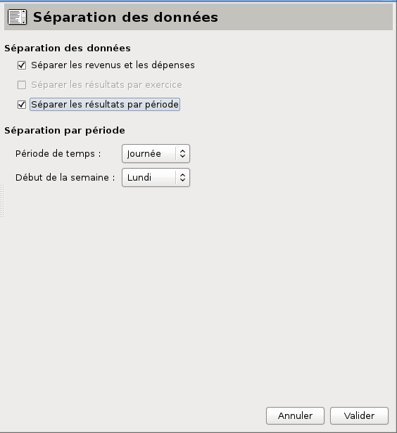
Figure 21.15: Séparation des données
Pour configurer l’affichage de vos données, passez à l’onglet suivant.
Cet onglet vous permet de définir la façon dont les données de votre état, sélectionnées et organisées dans les étapes précédentes, seront affichées. Il comprend quatre onglets :
Dans cet onglet vous pouvez définir les paramètres suivants :
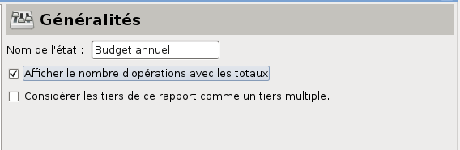 :
Figure 21.16: Affichage des généralités
Grisbi permet d’utiliser des tiers virtuels : un tiers virtuel est un état qui représente une liste de plusieurs tiers.
Lorsque vous saisissez une opération avec pour tiers un tiers virtuel, Grisbi enregistre, au moment de sa validation, une opération identique (montant, catégorie, imputation budgétaire, moyen de paiement etc.) pour chacun des tiers représentés par ce tiers virtuel. Par exemple, vous pouvez saisir en une seule fois un appel à cotisation pour 200 adhérents d’une association, ce qui représente un gain de temps très appréciable …
La création d’un tiers virtuel est celle d’un état comprenant la liste de tous les tiers qui vous intéressent.
Pour créer un tiers virtuel, procédez comme suit :
Votre nouveau tiers virtuel apparaît alors dans la liste des états, dans le panneau de navigation.
Note : comme le tiers virtuel ainsi créé est un état, il ne s’affiche pas dans la liste des tiers, mais dans celle des états, et il est géré de la même manière que les autres états.
Pour modifier un tiers virtuel, modifiez l’état qui le définit (voir la section 20.6, Modification d’un état).
Pour supprimer un tiers virtuel, vous avez deux possibilités :
La saisie d’une opération avec un tiers virtuel est décrite dans la section 8.8, Saisie d’une opération avec tiers virtuel.
Pour continuer la configuration de l’affichage de vos données, passez à l’onglet suivant.
Les choix affichés dans cet onglet dépendent étroitement des choix de niveaux de regroupement que vous avez faits dans l’étape Organisation. En effet, seuls les niveaux sélectionnés seront actifs, et les autres sont affichés en grisé.
Cocher une des cases actives a pour effet d’afficher l’information correspondante dans le titre ou dans le pied du niveau de regroupement. Les noms seront affichés dans le titre et les sous-totaux dans le pied.
Vous pouvez choisir d’afficher :
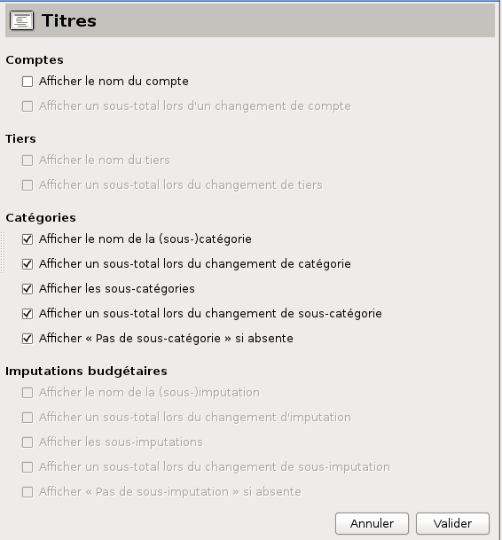
Figure 21.17: Affichage des titres
Pour continuer la configuration de l’affichage de vos données, passez à l’onglet suivant.
Dans cet onglet, vous pouvez déterminer la façon dont les opérations sélectionnées dans l’état seront affichées. Pour les afficher, cochez la case Afficher les opérations, qui par défaut ne l’est pas.
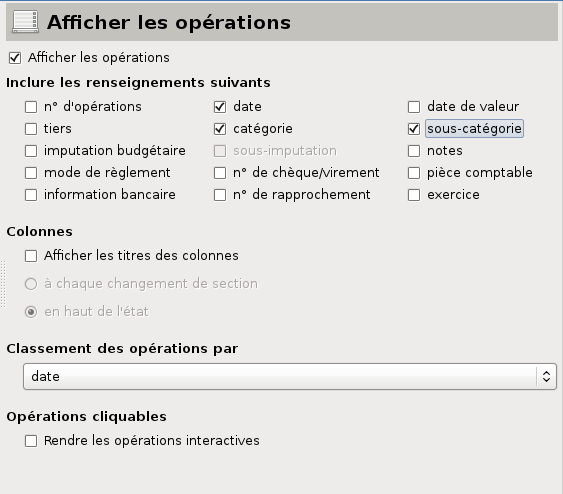
Figure 21.18: Affichage des opérations
Vous pouvez choisir quelles informations seront affichées en cochant la case correspondante. Cette case a une action globale et (dés)active simultanément toutes les informations. C’est bien utile pour passer d’un état affichant les informations à un état ne les affichant pas.
Vous pouvez choisir d’afficher les renseignements suivants :
Si vous vous interrogez sur l’utilité d’un état sans opérations, pensez que cela ne veut pas dire qu’il n’affichera rien. Vous pouvez avoir un état affichant uniquement les imputations et sous-imputations budgétaires. Cet état s’appelle Budget.
Si vous décidez d’afficher les opérations, vous pouvez alors sélectionner individuellement chaque information devant être affichée.
Pour plus de détails sur ces informations, voir la section 8.2.2, Champs d’information et de saisie.
Cliquer sur la case Afficher les titres des colonnes vous donne l’affichage des titres des colonnes pour chaque information affichée. Cela valide aussi les boutons :
Cochez l’un de ces deux boutons selon votre besoin.
Vous pouvez aussi déterminer le critère de classement des opérations à l’intérieur de chaque section (ou niveau de regroupement ). Par défaut, c’est la date de l’opération qui est sélectionnée, mais vous pouvez utiliser un autre critère de tri dans la liste déroulante, de façon à obtenir un état trié, par exemple par tiers ou par numéro de chèque.
Enfin, vous disposez d’une case à cocher (non cochée par défaut) qui vous permet de rendre toutes les opérations cliquables (ou interactives) de l’état.
Lorsque votre état terminé est validé et affiché dans le pavé des détails, si vous passez le curseur de votre souris au-dessus des opérations, leur texte passera en rouge, et si vous cliquez sur l’une d’entre elles, elle s’affichera dans l’onglet Opérations du compte concerné et sera sélectionnée : la barre d’information affiche le nom du compte où est enregistrée l’opération et son solde, le panneau de navigation affiche aussi ce nom, le pavé des détails de l’état est remplacé par celui de l’onglet Opérations de ce compte, l’opération est sélectionnée, et enfin le formulaire de saisie est ouvert et affiche le contenu de l’opération, prêt pour une modification éventuelle.
Cette fonction peut vous permettre de faire des recherches très poussées, vu la multiplicité des options de création des états. Elle peut aussi tout simplement vous permettre de corriger facilement une opération si vous constatez en lisant votre état qu’une information est erronée. Par contre, elle ralentit le temps de création de l’état, n’en abusez donc pas, à moins que votre machine soit suffisamment puissante pour vous le permettre.
Pour continuer la configuration de l’affichage de vos données, passez à l’onglet suivant.
Les montants des opérations sont affichés dans la devise dans laquelle elles ont été enregistrées, mais les totaux sont calculés dans une seule devise, que vous pouvez choisir ici.
Vous pouvez choisir, indépendamment, la devise pour les totaux suivants :
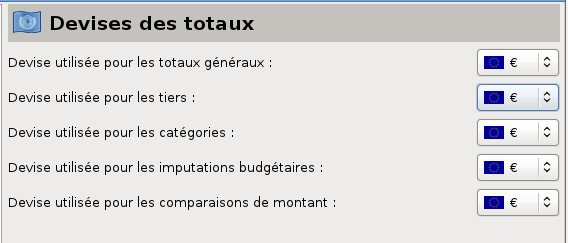
Figure 21.19: Affichage des devises
Il faut bien sûr que vous ayez au préalable créé la devise choisie (voir la section 8.7, Gestion des devises).
Note : Il n’est parfois pas possible de vérifier le total d’une addition car ses différentes composantes ne sont pas toutes dans la même devise…
Il est plus que probable que vous ne choisirez la plupart du temps qu’une seule et même devise pour tous ces totaux, mais c’est une possibilité supplémentaire qu’offre là Grisbi !
Vous avez terminé la création de votre nouvel état. Pour l’enregistrer, validez-le par le bouton Valider dans la fenêtre de création/modification. Votre nouvel état apparaît alors dans la liste des états, dans le panneau de navigation.